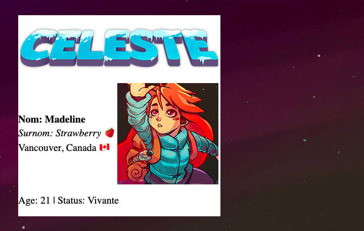

Pour cet exercice, vous devrez complétez la carte de présentation de Madeline, l’héroine du jeu Celeste.
Aperçu du résultat 👇

Matériel
Pen de départ
Une feuille de styles externe est utilisée afin d’attribuer de légers styles de bases aux différents éléments de la page afin de faciliter leur visualisation.
Requis
Ciblez les différents éléments de la carte en CSS afin de changer leur affichage dans le flux de la page et ainsi recréer l'aperçu visible plus haut ☝️. Pour ce faire, il faudra modifier leur propriété display.
Utilisez la propriété vertical-align lorsque nécessaire afin de respecter l'affichage demandé.
Notes de cours
Display
Vertical-align